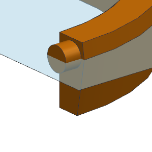
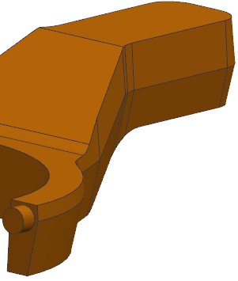

Draft both sides of a parting face
-
Double-click the new draft feature.
-
In the Draft References group, select the Draft Both Sides
 check box.
check box.
-
In the Faces to Draft group, set the following:
Symmetric Angle =

Above Angle 1 = 7
Below Angle 1 = 10
-
Click OK.

-
Hide the extruded parting feature so you can better observe the draft.

-
Close the part.